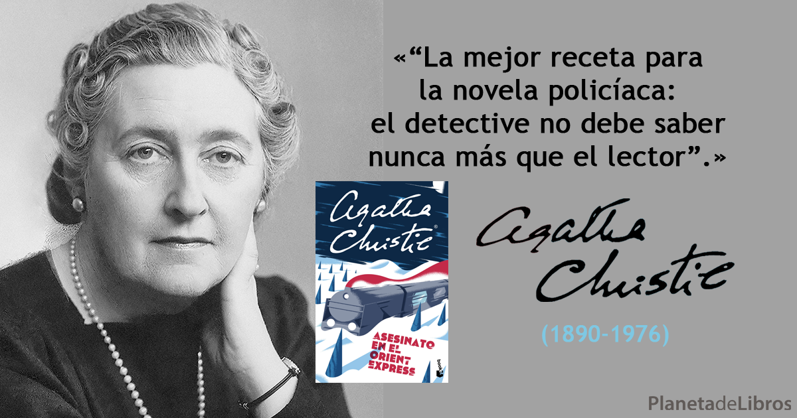

Agatha Christie.
El 15 de septiembre de 1890 nacía la creadora del detective mas famoso de la historia: Hercules Poirot. Convertida en una de las escritoras más leídas del mundo, sus continuos viajes y su boda con el arqueólogo Max Mallowan convirtieron su vida en una digna historia de aventuras.

Tras 74 novelas, 154 relatos cortos, 20 obras de teatro, 3 poemas y 2 autobiografías y un siglo después de la publicación de su primera historia, la producción de series, películas y videojuegos basados en la obra de Agatha Christie no cesa.
Obras
Sus obras se caracterizan por sus desenlaces inesperados. Hay personajes de su creación que han sido muy conocidos por sus lectores y seguidores: Hércules Poirot y Miss Marple..
Entre sus títulos más populares se encuentran Asesinato en el Orient-Express (1934), Muerte en el Nilo (1937) y Diez negritos (1939), aunque su mejor obra sea quizá una de las primeras, El asesinato de Roger Ackroyd (1926). En su última novela, Telón (1974), la muerte del personaje Hércules Poirot concluye una carrera ficticia de casi sesenta años.
Y no quedó ninguno (10 negritos)
Diez... Diez extraños son invitados a una mansión en una isla de la costa de Devon. Durante la cena, una voz acusa a cada uno de ellos de esconder un secreto inconfesable, y al final de la noche uno de ellos ya ha sido asesinado. Nueve... Su huésped no aparece, y a medida que el clima cambia, la isla deviene un lugar claustrofóbico y asfixiante. Ocho... Perseguidos por una vieja nana, todos se dan cuenta de que el asesino no solo está entre ellos, sino que se prepara para atacar de nuevo. Siete... La tensión aumenta, y los supervivientes tratan de ponerse un paso por delante de su perseguidor, quien parece obsesionado en llegar a la última línea de la nana: «Y no quedó ninguno»...
La Casa Torcida
En una gran mansión de los suburbios de Swinly Dean, Aristide Leonides yace muerto por envenenamiento. ¿Un accidente? No lo parece. De hecho, la sospecha ya ha recaído en su lujuriosa viuda, una belleza cincuenta años más joven, destinada a heredar una suculenta fortuna, y supuestamente liada con un joven preceptor confortablemente instalado entre la familia. Pero el criminólogo Charles Hayward tiene sus dudas respecto de la inocencia de la familia Leonides. Los conoce personalmente. Y no le faltan elementos para desconfiar...
Leave a comment